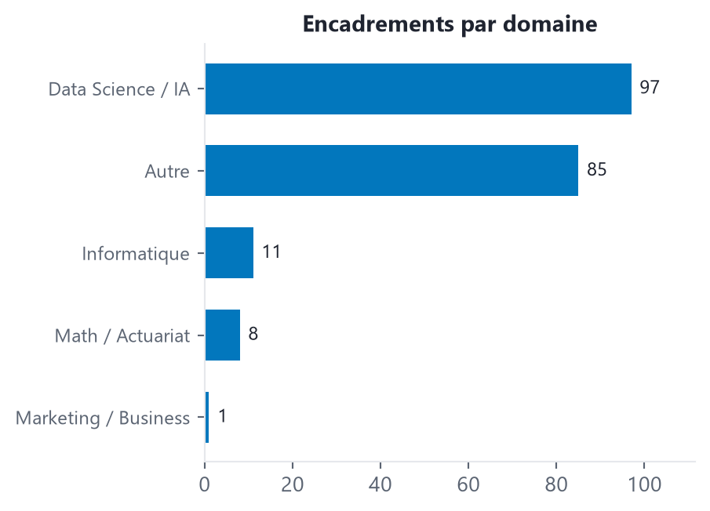
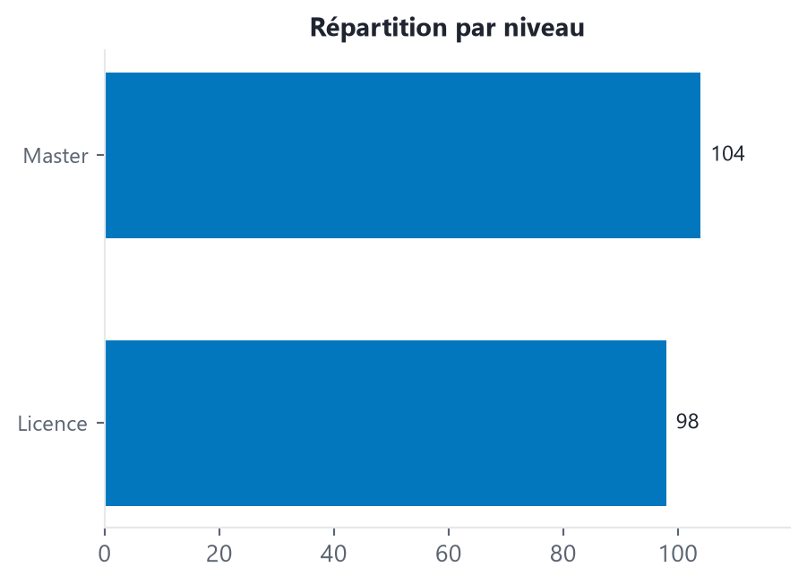

Encadrements académiques
PFE, mémoires, stages et projets de fin d’études — encadrant principal
202Encadrements
199Étudiants
134Soutenus / Terminés
67En cours
Évolution temporelle
Répartitions


Liste des encadrements
| Loading ITables v2.8.1 from the internet... (need help?) |